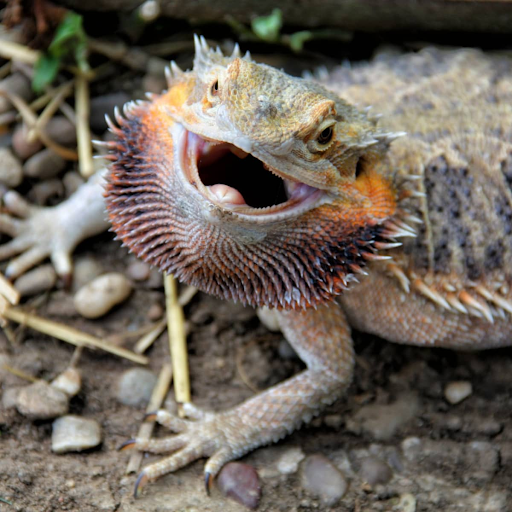
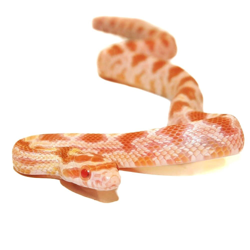

Newts are tiny lizards that are known to be less than 20cm. They are found in the eastern US and are very colorful.
Many have the ability to regenerate their limbs and they produce toxins from their skin to protect themselves from predators. They are
also carnivores, eating insects and other smaller diets.
Rank #2: Bearded Dragon

Bearded dragons are very common pets due to their easy-going and relaxed nature. They are also omnivores, eating a variety of
foods, including crickets. They also are known to wave their hands as a sign of submission and bob their heads towards potential mates. They live up
to ten years and are more solitary animals. They also hiss when frightened.
Rank #3: Corn Snake

Corn snakes are also common pets in the snake world. They have a second name called the red rat snake and are nonvenomous snakes.
They have red eyes and are diurnal (awake during the day). They have the issue of being mistaken for copperheads, a very venomous snake, and are considered
constrictors, like boa constrictors.